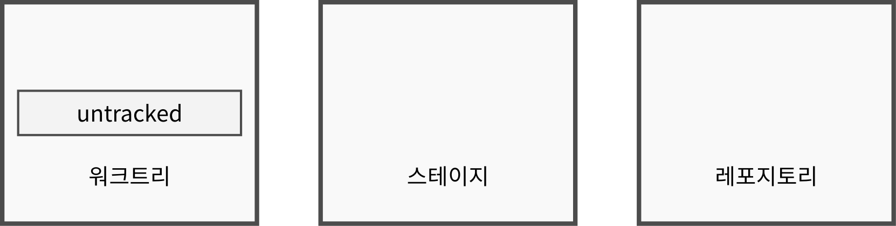

cd $HOME/lab
rm -rf test_basic_01
git init test_basic_01기본 동작
파일의 위치
- git의 파일 상태를 이해하기 위해서는 파일의 “위치”라는 개념을 상상하면 이해가 쉬움
- “위치” 개념은 git의 공식 설명은 아니며 이해를 돕기 위한 것임
| 이름 | 의미 | 실제 위치 |
|---|---|---|
| 워크트리(worktree) | 일반적인 디렉토리 | 체크아웃 디렉토리 |
| 스테이징 영역(staging area), 스테이지(stage) 또는 인덱스(index) | 레포지토리에 들어가기전의 임시 위치 | .git 디렉토리의 objects 서브디렉토리와 .git 디렉토리의 index 파일 |
| 레포지토리(repository) | 버전 기록이 저장되는 위치 | .git 디렉토리의 objects 서브디렉토리 |

파일의 추적 여부
- 비추적(untracked) 파일: 레포지토리에 기록되지 않은 파일
- 추적(tracked) 파일: 레포지토리에 기록된 파일
파일의 상태
- 워크트리와 스테이지에 있는 파일은 상태(status)를 가진다.
- 2글자로 표시되며 글자의 위치가 파일의 위치를 가리킨다.
- 글자가 뒤에 있고 앞가 공백이면 위크트리에 존재하는 파일
- 글자가 앞에 있고 뒤가 공백이면 스테이지에 존재하는 파일
| 위치 | 추적/비추적 | 상태 | 표시 | 설명 |
|---|---|---|---|---|
| 워크트리 | untracked | new | “??” |
레포지토리에 기록되지 않거나 스테이지에 올라가지 않은 파일 |
| tracked | clean | 미표시 | 레포지토리에 기록된 파일로 레포지토리와 파일 내용이 같은 상태 | |
| tracked | modified | “␣M” |
레포지토리에 기록된 파일로 레포지토리와 파일 내용이 다른 상태 | |
| tracked | deleted | “␣D” |
레포지토리에 기록된 파일로 삭제된 상태 | |
| tracked | renamed | “␣R” |
레포지토리에 기록된 파일로 이름이 바뀐 상태 | |
| 스테이지 | untracked | added | “A␣” |
처음으로 기록되어 스테이지에 들어온 상태 |
| tracked | modified | “M␣” |
예전에 기록된 파일로 변경되어 스테이지에 들어온 상태 | |
| tracked | deleted | “D␣” |
예전에 기록된 파일로 삭제되어 스테이지에 들어온 상태 | |
| tracked | renamed | “R␣” |
예전에 기록된 파일로 이름이 바뀌어 스테이지에 들어온 상태 |
status 명령
status명령을 사용하면 파일의 위치 및 상태를 볼 수 있음
실습 1: 레포지토리 생성
- 레포지토리 생성
Initialized empty Git repository in ~/lab/test_basic_01/.git/
- 상태 확인
cd test_basic_01
git statusOn branch main
No commits yet
nothing to commit (create/copy files and use "git add" to track)기본 동작
| 동작 | 명령 | 내용 | 설명 |
|---|---|---|---|
| 스테이징(staging) | add | 워크트리의 파일을 스테이지로 복사 | 스테이지에 워트크리 파일의 복사본이 생기고 워크트리의 파일은 그대로 유지 |
| 커밋(commit) | commit | 스테이지의 파일을 레포지토리로 이동 | 레포지토리에 스테이지 파일의 복사본이 생기고 스테이지의 파일은 없어짐 |
| 스테이징 취소(unstaging) | restore –staged | 스테이지의 파일을 없앰 | 스테이지에 레포지토리 파일을 복사하면서 스테이지 파일이 없어지고 워크트리는 그대로 유지 |
| 워크트리 원복(restore) | restore | 워크트리의 파일을 레포지토리의 파일로 원복 | 워크트리에 스테이지 파일을 복사하면서 워크트리의 파일의 변화가 없어짐 |
add, commit 명령
add,commit명령을 이용하면 스테이지 또는 레포지토리에 파일을 생성할 수 있음add명령은 워크트리의 파일을 스테이지로 복사하고 워크트리의 파일은 그대로 유지 (워크트리 -> 스테이지)commit명령은 스테이지의 파일을 레포지토리로 복사하고 스테이지의 파일을 삭제 (스테이지 -> 레포지토리)
| 행위 | 워크트리 | 스테이지 | 레포지토리 | 명령 | 설명 |
|---|---|---|---|---|---|
| 스테이징 | (1) 워크트리 파일 내용을 이용하여 | (2) 스테이지 파일 추가(갱신) | - | git add |
스테이지에 워크트리 파일 추가(갱신) |
| 커밋 | - | (1) 스테이지 파일 내용을 이용하여 | (2) 레포 파일 추가(갱신) | git commit |
레포에 스테이지 파일 추가(갱신) |
실습 2: add, commit
- 파일 생성
echo "line 1" >> file.txt
ls -ltotal 8
-rw-r--r--@ 1 joelkim staff 7 Aug 19 21:18 file.txtgit status # 현재 상태 조회On branch main
No commits yet
Untracked files:
(use "git add <file>..." to include in what will be committed)
file.txt
nothing added to commit but untracked files present (use "git add" to track)git status -s?? file.txt
- 파일 add
git add file.txtgit statusOn branch main
No commits yet
Changes to be committed:
(use "git rm --cached <file>..." to unstage)
new file: file.txt
git status -sA file.txt
- 파일 커밋
git commit -m c1[main (root-commit) a6138ab] c1
1 file changed, 1 insertion(+)
create mode 100644 file.txtgit statusOn branch main
nothing to commit, working tree cleangit status -s- 파일 수정
echo "line 2" >> file.txtgit statusOn branch main
Changes not staged for commit:
(use "git add <file>..." to update what will be committed)
(use "git restore <file>..." to discard changes in working directory)
modified: file.txt
no changes added to commit (use "git add" and/or "git commit -a")git status -s M file.txt- 수정 파일 add
git add file.txtgit statusOn branch main
Changes to be committed:
(use "git restore --staged <file>..." to unstage)
modified: file.txt
git status -sM file.txt
- 수정 파일 commit
git commit -m c2[main 9e78135] c2
1 file changed, 1 insertion(+)git statusOn branch main
nothing to commit, working tree cleangit status -s
상태 변화도
flowchart TB
subgraph 워크트리
start([" "])
untracked["untracked, new"]
clean["tracked, clean"]
modified["tracked, modified"]
renamed["tracked, renamed"]
deleted["tracked, deleted"]
end
subgraph 스테이지
add_in_stage["untracked, add"]
modified_in_stage["tracked, modified"]
renamed_in_stage["tracked, renamed"]
deleted_in_stage["tracked, deleted"]
end
subgraph 레포지토리
commit
end
start -- "(1) 파일 생성" --> untracked -- "(2) git add" --> add_in_stage -- "(3) git commit" --> commit
untracked -- "(3) git commit" --> clean
clean -- "(4) 파일 수정" --> modified -- "(5) git add" --> modified_in_stage -- "(6) git commit" --> commit
clean -- "파일 이름변경" --> renamed -- "git add" --> renamed_in_stage -- "git commit" --> commit
clean -- "파일 삭제" --> deleted -- "git add" --> deleted_in_stage -- "git commit" --> commit
add 명령과 commit 명령이 분리된 이유
commit명령에 파일 또는 디렉토리 경로를 붙여서 바로 레포지토리로 넣으면 스테이지 단계가 필요하지 않다.- 그러나 이렇게 명령의 인수로 사용하는 경우 오타나 실수로 잘못된 파일을 레포지토리에 넣거나 넣어야 할 파일을 누락할 가능성이 있다.
- 한 번 레포지토리에 들어가면 이후 두번째 커밋으로 해당 파일으르 삭제하더라도 기록이 남는다.
- 따라서
add명령으로commit명령의 인수가 될 파일 목록을 편집(추가 또는 수정, 삭제)할 기회를 제공한다.
추가적인 사용법
commit 파일_또는_디렉토리_경로형식으로 파일이나 디렉토리의 경로를 지정하면 스테이지의 파일 전체 목록을 무시하고 해당 파일만 레포지토리로 복사함 (일단add명령으로 스테이지에 존재하고 있어야 하며 스테이지의 다른 파일들은 스테이지에 그대로 남아 있게 됨)commit -a 파일_또는_디렉토리_경로형식으로-a옵션을 사용하면add단계를 자체적으로 실행하므로 별도의git add없이 바로 스테이지를 거쳐 레포지토리에 커밋됨 (커밋 후에는 스테이지에서 삭제됨)
restore 명령
restore명령을 이용하면 스테이지 또는 레포지토리에 파일을 원복할 수 있음--staged인수가 있는restore --staged명령은 레포지토리의 파일을 스테이지로 복사함으로써 스테이지의 파일을 삭제하고 워크트리의 파일은 그대로 유지 (git add명령의 취소)- 인수가 없는
restore명령은 레포지토리 또는 스테이지의 파일을 워크트리로 복사함으로써 워크트리의 파일을 원복시킨다. (파일 편집 취소)- 만약 스테이지에 들어간 내용이 없으면 레포지토리의 내용으로 덮어쓴다.
- 만약 변경되어 스테이지에 들어간 내용이 있으면 레포지토리가 아닌 스테이지의 내용으로 덮어쓴다.
- 만약 워크트리도 원복하고 스테이지에 add된 파일도 없애려면
restore --staged명령과restore명령을 순차적으로 (순서가 중요함!) 실행해야 함 - 워크트리/스테이지 동시 원복은
reset --hard HEAD명령으로 한번에 가능하지만 권장하지 않음
| 행위 | 워크트리 | 스테이지 | 레포지토리 | 명령 | 설명 |
|---|---|---|---|---|---|
| 스테이징 취소 | - | (2) 스테이지 파일 삭제 | (1) 레포 파일 내용을 이용하여 | git restore --staged |
스테이지 파일이 있으면 스테이지 파일 삭제, 없으면 아무 일도 일어나지 않는다. 즉, 커밋될 예정인 파일 목록에서 파일을 없앤다 |
| 워크트리 원복 | (2) 워크트리 파일 원복 | (1) 스테이지 파일 내용을 이용하여 | - | git restore |
워크트리의 변경된 파일을 마지막 스테이징된 상태로 되돌린다. |
실습 3: restore
git statusOn branch main
nothing to commit, working tree clean- 파일 변경
echo "line 3" >> file.txt
git statusOn branch main
Changes not staged for commit:
(use "git add <file>..." to update what will be committed)
(use "git restore <file>..." to discard changes in working directory)
modified: file.txt
no changes added to commit (use "git add" and/or "git commit -a")- 스테이징 하기 전에
git restore명령을 사용하면 레포지토리 버전으로 원복
git restore file.txt
git statusOn branch main
nothing to commit, working tree clean- 다시 변경 후 add 명령으로 스테이징
echo "line 3" >> file.txt
git add file.txtgit restore --staged명령을 사용하면 레포지토리 버전으로 스테이지를 덮어 쓴다. 즉 add 명령을 취소한 셈이 된다. 워크트리의 변경사항은 그대로 유지된다.
git restore --staged file.txt
git statusOn branch main
Changes not staged for commit:
(use "git add <file>..." to update what will be committed)
(use "git restore <file>..." to discard changes in working directory)
modified: file.txt
no changes added to commit (use "git add" and/or "git commit -a")- 이번에는 스테이에 add 한 후에 다시 워크트리의 파일을 변경
git add file.txt
git statusOn branch main
Changes to be committed:
(use "git restore --staged <file>..." to unstage)
modified: file.txt
cat file.txtline 1
line 2
line 3- 스테이지에 add 한 파일이 있는 경우 git restore를 하면 레포지토리가 아닌 스테이지의 파일로 워크트리를 덮어쓰므로 워크트리(와 스테이지 모두)에는 아무런 변화가 없다.
git restore file.txt
git statusOn branch main
Changes to be committed:
(use "git restore --staged <file>..." to unstage)
modified: file.txt
cat file.txtline 1
line 2
line 3
- 이제는 스테이지에 파알을 add 한 이후에 다시 워크트리 파일을 수정한다.
echo "line 4" >> file.txt- 이렇게 하면 레포지토리, 스테이지, 워크트리의 파일이 모두 다름
git statusOn branch main
Changes to be committed:
(use "git restore --staged <file>..." to unstage)
modified: file.txt
Changes not staged for commit:
(use "git add <file>..." to update what will be committed)
(use "git restore <file>..." to discard changes in working directory)
modified: file.txt
- 레포지토리 버전
git show HEAD:file.txtline 1
line 2- 스테이지 버전
git show :file.txtline 1
line 2
line 3- 워크트리 버전
cat file.txtline 1
line 2
line 3
line 4- 이 때
git restore명령을 실행하면 스테이지에 파일이 있으므로 스테이지 버전으로 워크트리를 덮어쓴다.
git restore file.txt- 따라서 마지막 워크트리 변경사항만 없어지고 스테이징한 변경사항은 그대로 남는다.
git statusOn branch main
Changes to be committed:
(use "git restore --staged <file>..." to unstage)
modified: file.txt
cat file.txtline 1
line 2
line 3git restore --staged명령은 레포지토리 버전으로 스테이지 파일을 원복한다.
git restore --staged file.txt
git statusOn branch main
Changes not staged for commit:
(use "git add <file>..." to update what will be committed)
(use "git restore <file>..." to discard changes in working directory)
modified: file.txt
no changes added to commit (use "git add" and/or "git commit -a")- 다시
git restore명령을 하면 워크트리의 파일을 원복
git restore file.txt
git statusOn branch main
nothing to commit, working tree clean상태 변화도
flowchart BT
subgraph 워크트리
untracked
clean
modified
renamed
deleted
end
subgraph 스테이지
new_in_stage["new"]
modified_in_stage["modified"]
renamed_in_stage["renamed"]
deleted_in_stage["deleted"]
end
modified -- "git restore" --> clean
renamed -- "git restore" --> clean
deleted -- "git restore" --> clean
new_in_stage -- "git restore --staged" --> untracked
modified_in_stage -- "git restore --staged" --> modified
renamed_in_stage -- "git restore --staged" --> renamed
deleted_in_stage -- "git restore --staged" --> deleted
rm 명령
- 레포지토리의 파일을 삭제하는데 사용하는 명령
- rm 명령없이도 파일을 워크트리에서 삭제한 후 add, commit 명령을 하면 삭제됨
- rm 명령은 이 과정을 돕는 보조 명령
| 행위 | 워크트리 | 스테이지 | 레포지토리 | 명령 |
|---|---|---|---|---|
| 스테이지에 삭제 상태 추가 | 워크트리의 해당 파일 유지 | 삭제 상태 추가 | 커밋 이후에 삭제됨 | git rm --cached |
| 스테이지에 삭제 상태 추가하고 워크트리의 파일도 삭제 | 워크트리의 해당 파일 삭제 | 삭제 상태 추가 | 커밋 이후에 삭제됨 | git rm |
실습 4: rm
- 일반적 삭제 과정은 다음 순서를 따른다.
- 워크트리에서 삭제
- 삭제 정보를 스테이지에 add
- commit 명령으로 삭제 확정
ls -ltotal 8
-rw-r--r--@ 1 joelkim staff 14 Aug 19 21:18 file.txt- 파일 삭제
rm -f file.txtls -ltotal 0
- add 명령으로 스테이징. 이 때 파일이 삭제되어 파일명 인수를 사용하지 못하므로 현재 디렉토리 사용
git add .git statusOn branch main
Changes to be committed:
(use "git restore --staged <file>..." to unstage)
deleted: file.txt

- commit 명령으로 삭제 확정
git commit -m c3[main 5dd946f] c3
1 file changed, 2 deletions(-)
delete mode 100644 file.txtgit statusOn branch main
nothing to commit, working tree clean- git rm 명령을 실습하기 위해 git reset 명령으로 방금한 커밋을 취소하고 되돌아간다.
git reset --hard HEAD~1HEAD is now at 9e78135 c2- git rm 명령을 실행하면 1번과 2번 단계를 한 번에 실행한다. 즉, 워크트리에서 파일이 삭제되며 스테이지에 삭제 정보가 올라간다.
ls -ltotal 8
-rw-r--r--@ 1 joelkim staff 14 Aug 19 21:18 file.txtgit rm file.txtrm 'file.txt'ls -ltotal 0git statusOn branch main
Changes to be committed:
(use "git restore --staged <file>..." to unstage)
deleted: file.txt
- 이 상태에서 커밋을 하면 스테이지의 삭제 정보가 레포지토리로 들어가서 삭제가 확정된다.
git commit -m c3[main b9e6de8] c3
1 file changed, 2 deletions(-)
delete mode 100644 file.txtgit statusOn branch main
nothing to commit, working tree clean- 이번에는 git rm –cached 를 실습하기 위해 git reset 명령으로 방금한 커밋을 취소하고 되돌아간다.
git reset --hard HEAD~1HEAD is now at 9e78135 c2- git rm –cached 명령을 실행하면 스테이지에 삭제 정보는 올라가지만 워크트리에는 그대로 남는다.
ls -ltotal 8
-rw-r--r--@ 1 joelkim staff 14 Aug 19 21:18 file.txtgit rm --cached file.txtrm 'file.txt'ls -ltotal 8
-rw-r--r--@ 1 joelkim staff 14 Aug 19 21:18 file.txtgit statusOn branch main
Changes to be committed:
(use "git restore --staged <file>..." to unstage)
deleted: file.txt
Untracked files:
(use "git add <file>..." to include in what will be committed)
file.txt
- 따라서 삭제 후에는 워크트리에 untracked 파일로 인식된다.
git commit -m c3[main 98f5e88] c3
1 file changed, 2 deletions(-)
delete mode 100644 file.txtgit statusOn branch main
Untracked files:
(use "git add <file>..." to include in what will be committed)
file.txt
nothing added to commit but untracked files present (use "git add" to track)